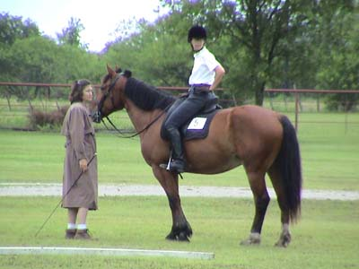
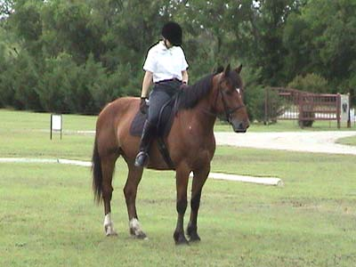
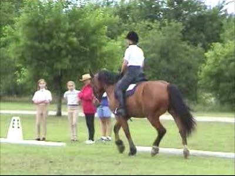
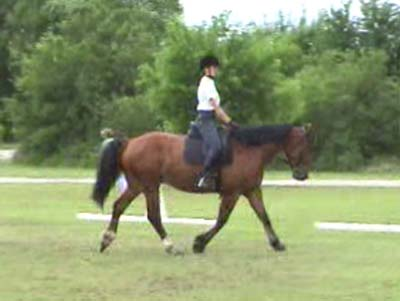
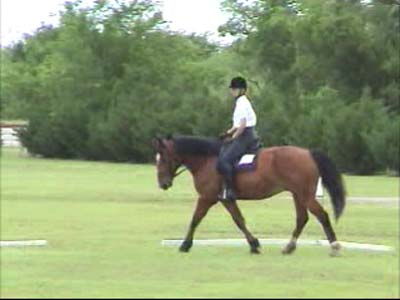
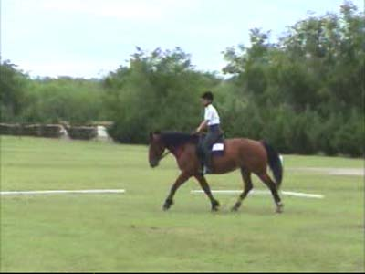
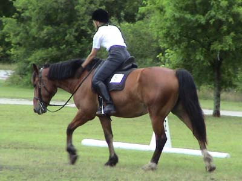

Bob's First Dressage
Show Not too bad of a showing for his first
time out. We went Intro 1 & 2 and got
a 62% and a 66%. He looked at everything,
but never spooked. He was a
little resistant about the trotting, and
I had changed the saddle gullet, so I'm going
to change it back and see if that was
bothering him.
We got a Third and Fourth place and the
judge liked him.

Waiting with my trainer to go in.
Bob is looking pretty 'healthy' these days.

He was very nice about his halts.
He listens to half halts in the walk, much better than in the trot.

He tends to stay bent to the left.
We still have a lot of bending work to do to the right.

The pictures are from the video. Not
so clear.

Our turns up centerline were pretty
nice.

My trainer commented that my posture
is much better in the sidesaddle. I'll always have to work on sitting up
and keeping my shoulders back.

I'm looking forward to our next show.
We'll get to see how he handles an indoor.
He's bending to the right pretty consistently
at home now. I think once he gets used to being in strange places, he'll
be able to listen to me better.